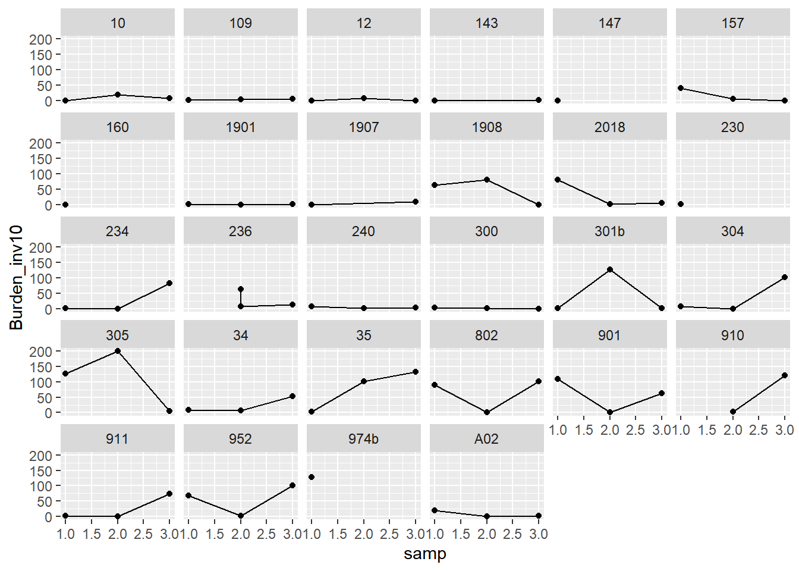
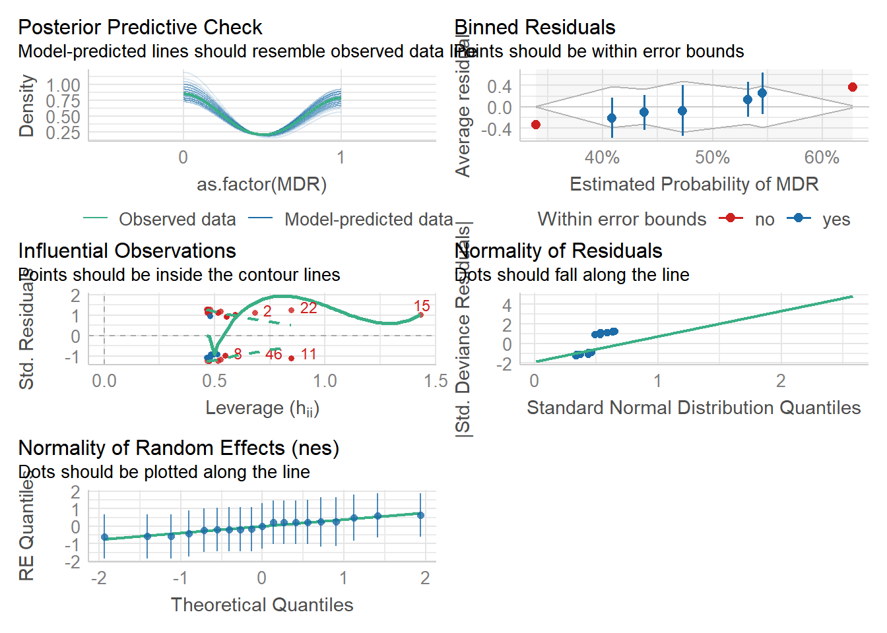
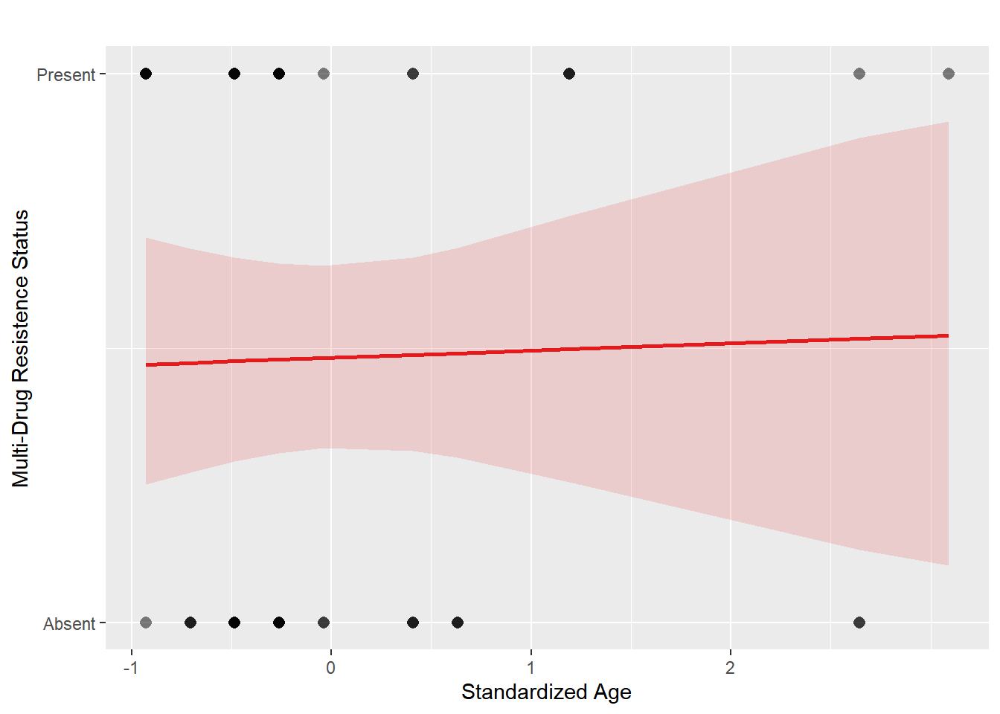
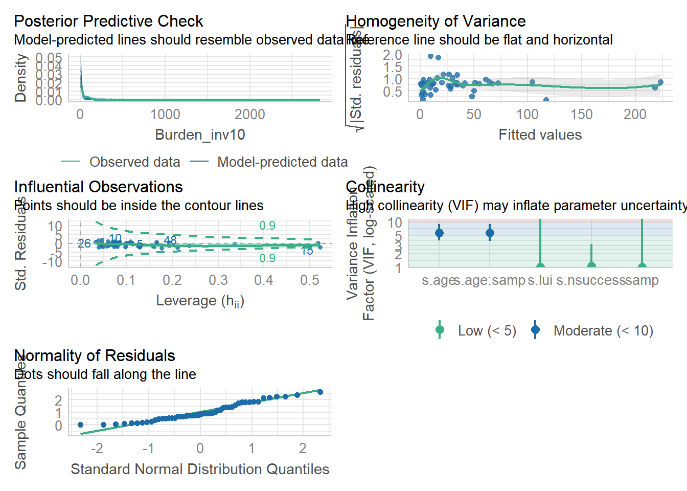
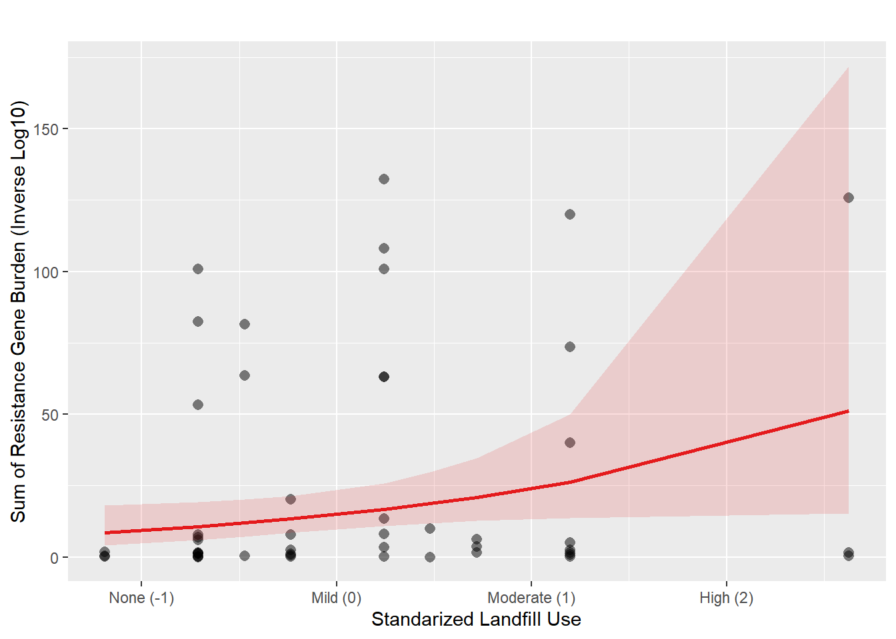
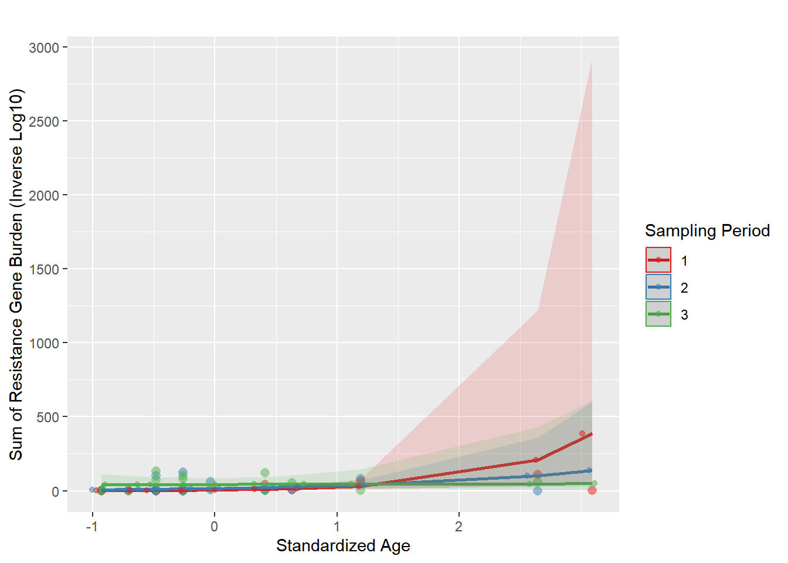
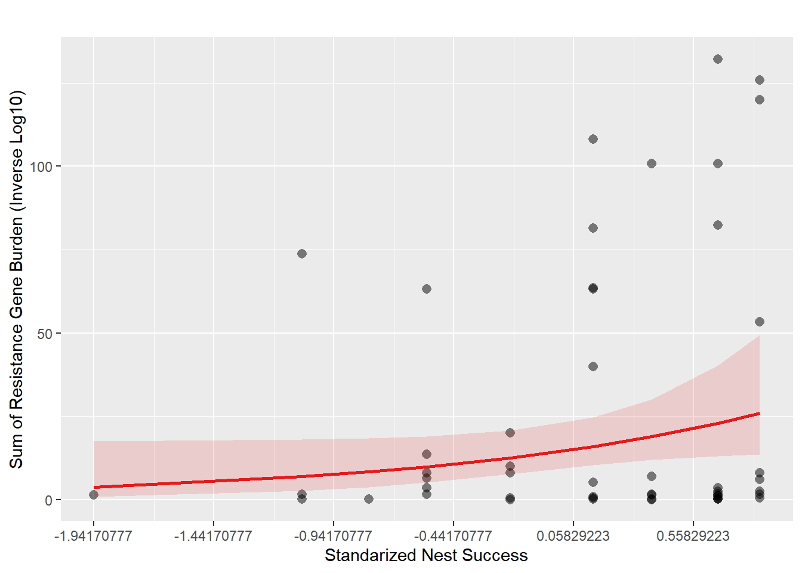
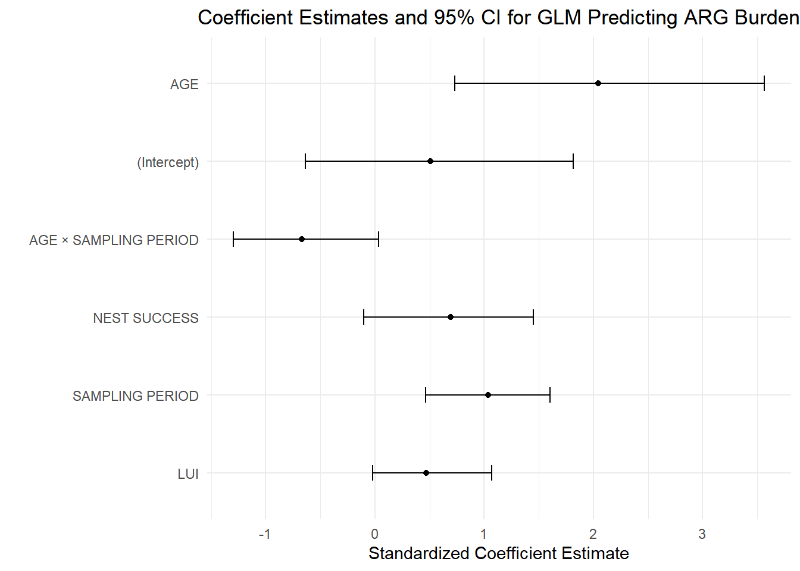

#load needed packages. make sure they are installed.
library(tidyverse)
library(ggplot2) #for plotting
library(ggeffects) #to explore plots
library(broom) #for cleaning up output from lm()
library(broom.mixed) #for cleaning up output from lmer()
library(here) #for data loading/saving
library(multilevelmod) #mixed effect models
library(parsnip)
library(lme4)
library(sjPlot) #to help plot models
library(performance) #evaluate model fit and performance
library(see)
library(cAIC4)
library(flextable)
library(officer)
library(dplyr) #cleaning
library(patchwork)
library(tidymodels)
#load all data
stork_AMR_clean <- readRDS(here::here("2 Clean Data","stork_AMR_clean.rds"))
# Subset the dataset for the year 2021
data <- stork_AMR_clean %>%
filter(yr == 2021)StatiscalAnalysis_ModelFitting
Ciconia ciconia analysis script
this script loads the processed, cleaned data, does a simple analysis and saves the results to the results folder
Data fitting/statistical analysis
Data of interest: Landfill use index (LUI) and multi-drug resistence (MDR) throughout the different sampling periods during the stork breeding season.
We’ll start by fitting two models. We will used mixed-effects models to control for repeated sampling of the same nest. The design is unbalanced, thus we cannot use a repeated measures anova.
We’ll start with a single factor repeated measures evaluation the effect of LUI on blaTEM (betalactam) resistence gene burden.
facet_plot <- data %>%
ggplot(aes(x = samp, y = Burden_inv10)) +
geom_point() +
geom_line() +
facet_wrap(~ nes)
facet_plot`geom_line()`: Each group consists of only one observation.
ℹ Do you need to adjust the group aesthetic?
`geom_line()`: Each group consists of only one observation.
ℹ Do you need to adjust the group aesthetic?
`geom_line()`: Each group consists of only one observation.
ℹ Do you need to adjust the group aesthetic?
`geom_line()`: Each group consists of only one observation.
ℹ Do you need to adjust the group aesthetic?
# Use ggsave to save the plot
ggsave(filename = here('4 Results', 'Figures', 'facet_plot.png'), plot = facet_plot, width = 10, height = 6, dpi = 300)`geom_line()`: Each group consists of only one observation.
ℹ Do you need to adjust the group aesthetic?
`geom_line()`: Each group consists of only one observation.
ℹ Do you need to adjust the group aesthetic?
`geom_line()`: Each group consists of only one observation.
ℹ Do you need to adjust the group aesthetic?
`geom_line()`: Each group consists of only one observation.
ℹ Do you need to adjust the group aesthetic?No obvious trends…
Build models using glmer
#MDR
glmer_spec <-
logistic_reg() %>%
set_engine("glmer")Multi-drug resistance (0,1 data) vs Covariates Check the varience of the fixed effect (Nest = Nes)
# Define models (GLMMs with nest (nes) as a random effect)
glmer_fit_null <- glmer(as.factor(MDR) ~ (1 | nes),
data = data,
family = binomial(link = "logit"),
control = glmerControl(optimizer = "bobyqa"))
glmer_fit_global <- glmer(as.factor(MDR) ~ s.lui + s.age + samp + s.nsuccess + (1 | nes),
data = data,
family = binomial(link = "logit"),
control = glmerControl(optimizer = "bobyqa"))
# Univariate Models
glmer_fit_1 <- glmer(as.factor(MDR) ~ s.lui + (1 | nes), data = data, family = binomial(link = "logit"))
glmer_fit_2 <- glmer(as.factor(MDR) ~ s.age + (1 | nes), data = data, family = binomial(link = "logit"))
glmer_fit_3 <- glmer(as.factor(MDR) ~ samp + (1 | nes), data = data, family = binomial(link = "logit"))
glmer_fit_4 <- glmer(as.factor(MDR) ~ s.nsuccess + (1 | nes), data = data, family = binomial(link = "logit"))
# Multivariate Models
glmer_fit_5 <- glmer(as.factor(MDR) ~ s.lui + samp + (1 | nes), data = data, family = binomial(link = "logit"))
glmer_fit_6 <- glmer(as.factor(MDR) ~ s.lui + s.nsuccess + (1 | nes), data = data, family = binomial(link = "logit"))
glmer_fit_7 <- glmer(as.factor(MDR) ~ samp + s.nsuccess + (1 | nes), data = data, family = binomial(link = "logit"))
glmer_fit_8 <- glmer(as.factor(MDR) ~ s.lui * s.age + samp + s.nsuccess + (1 | nes), data = data, family = binomial(link = "logit"))
glmer_fit_9 <- glmer(as.factor(MDR) ~ s.lui + s.age * samp + s.nsuccess + (1 | nes), data = data, family = binomial(link = "logit"))
glmer_fit_10 <- glmer(as.factor(MDR) ~ s.lui + s.age + samp * s.nsuccess + (1 | nes), data = data, family = binomial(link = "logit"))
glmer_fit_11 <- glmer(as.factor(MDR) ~ s.lui + s.age + (1 | nes), data = data, family = binomial(link = "logit"))
glmer_fit_12 <- glmer(as.factor(MDR) ~ s.lui + s.age + s.nsuccess + (1 | nes), data = data, family = binomial(link = "logit"))
## **Step 2: Check Variance of `nes` for Each Model**
# Create a list of all GLMM models
glmer_models <- list(
glmer_fit_null, glmer_fit_global, glmer_fit_1, glmer_fit_2, glmer_fit_3,
glmer_fit_4, glmer_fit_5, glmer_fit_6, glmer_fit_7, glmer_fit_8,
glmer_fit_9, glmer_fit_10, glmer_fit_11, glmer_fit_12
)
# Function to check variance of random effect
check_variance <- function(model, model_name) {
variance <- summary(model)$varcor
singular <- isSingular(model, tol = 1e-4)
return(data.frame(
Model = model_name,
Variance = ifelse(length(variance) > 0, as.numeric(variance[[1]][1]), NA),
Singular = singular
))
}
# Check variance for all models
variance_results <- do.call(rbind,
lapply(seq_along(glmer_models), function(i) {
check_variance(glmer_models[[i]], paste0("Model_", i))
}))
# Print results
print(variance_results) Model Variance Singular
1 Model_1 0.1766406 FALSE
2 Model_2 0.9456484 FALSE
3 Model_3 0.2086830 FALSE
4 Model_4 0.5801952 FALSE
5 Model_5 0.3136672 FALSE
6 Model_6 0.1730813 FALSE
7 Model_7 0.3180824 FALSE
8 Model_8 0.2047885 FALSE
9 Model_9 0.3220926 FALSE
10 Model_10 0.9472108 FALSE
11 Model_11 0.9640561 FALSE
12 Model_12 0.9128857 FALSE
13 Model_13 0.4915868 FALSE
14 Model_14 0.4807049 FALSEKeep NES as a random effect since the varience is high!
Use AIC to see the best model; None look great…
glmer_indices <- compare_performance(glmer_fit_null,glmer_fit_global, glmer_fit_1, glmer_fit_2, glmer_fit_3, glmer_fit_4, glmer_fit_5, glmer_fit_6, glmer_fit_7, glmer_fit_8, glmer_fit_9, glmer_fit_10, glmer_fit_11, glmer_fit_12)When comparing models, please note that probably not all models were fit
from same data.print(glmer_indices)# Comparison of Model Performance Indices
Name | Model | AIC (weights) | AICc (weights) | BIC (weights) | R2 (cond.) | R2 (marg.) | ICC | RMSE | Sigma | Log_loss | Score_log | Score_spherical
-----------------------------------------------------------------------------------------------------------------------------------------------------------------------
glmer_fit_null | glmerMod | 104.7 (<.001) | 104.9 (<.001) | 109.3 (<.001) | 0.051 | 0.000 | 0.051 | 0.478 | 1.000 | 0.650 | -27.931 | 0.058
glmer_fit_global | glmerMod | 74.6 (0.190) | 76.6 (0.143) | 86.1 (0.033) | 0.354 | 0.169 | 0.223 | 0.398 | 1.000 | 0.490 | -16.439 | 0.031
glmer_fit_1 | glmerMod | 80.5 (0.010) | 80.9 (0.016) | 86.6 (0.026) | 0.126 | 0.071 | 0.060 | 0.463 | 1.000 | 0.621 | -18.520 | 0.023
glmer_fit_2 | glmerMod | 74.5 (0.201) | 75.0 (0.309) | 80.3 (0.616) | 0.150 | 6.817e-04 | 0.150 | 0.441 | 1.000 | 0.579 | -14.434 | 0.073
glmer_fit_3 | glmerMod | 104.4 (<.001) | 104.8 (<.001) | 111.3 (<.001) | 0.123 | 0.039 | 0.087 | 0.458 | 1.000 | 0.610 | -28.837 | 0.030
glmer_fit_4 | glmerMod | 106.4 (<.001) | 106.8 (<.001) | 113.3 (<.001) | 0.055 | 0.005 | 0.050 | 0.478 | 1.000 | 0.649 | -28.026 | 0.048
glmer_fit_5 | glmerMod | 81.0 (0.008) | 81.8 (0.010) | 89.1 (0.007) | 0.185 | 0.106 | 0.088 | 0.448 | 1.000 | 0.590 | -19.023 | 0.023
glmer_fit_6 | glmerMod | 82.2 (0.004) | 83.0 (0.006) | 90.3 (0.004) | 0.134 | 0.080 | 0.059 | 0.462 | 1.000 | 0.619 | -18.591 | 0.023
glmer_fit_7 | glmerMod | 105.8 (<.001) | 106.4 (<.001) | 114.9 (<.001) | 0.136 | 0.051 | 0.089 | 0.455 | 1.000 | 0.604 | -29.064 | 0.023
glmer_fit_8 | glmerMod | 76.6 (0.070) | 79.3 (0.037) | 90.0 (0.005) | 0.355 | 0.170 | 0.224 | 0.398 | 1.000 | 0.490 | -16.434 | 0.031
glmer_fit_9 | glmerMod | 76.3 (0.083) | 78.9 (0.044) | 89.7 (0.006) | 0.363 | 0.177 | 0.227 | 0.396 | 1.000 | 0.486 | -16.655 | 0.033
glmer_fit_10 | glmerMod | 75.5 (0.125) | 78.1 (0.066) | 88.9 (0.008) | 0.373 | 0.199 | 0.217 | 0.399 | 1.000 | 0.485 | -16.967 | 0.029
glmer_fit_11 | glmerMod | 74.4 (0.212) | 75.3 (0.272) | 82.1 (0.251) | 0.188 | 0.067 | 0.130 | 0.438 | 1.000 | 0.574 | -14.957 | 0.027
glmer_fit_12 | glmerMod | 76.0 (0.096) | 77.4 (0.097) | 85.6 (0.043) | 0.198 | 0.080 | 0.127 | 0.437 | 1.000 | 0.572 | -15.051 | 0.027# Create and format the AIC table
AIC_table1 <- compare_performance(glmer_fit_null, glmer_fit_global, glmer_fit_1, glmer_fit_2, glmer_fit_3,
glmer_fit_4, glmer_fit_5, glmer_fit_6, glmer_fit_7, glmer_fit_8,
glmer_fit_9, glmer_fit_10, glmer_fit_11, glmer_fit_12,
rank = TRUE, metrics = "AICc")When comparing models, please note that probably not all models were fit
from same data.# Confirm all models are in the table
print(AIC_table1)# Comparison of Model Performance Indices
Name | Model | AICc weights | Performance-Score
--------------------------------------------------------------
glmer_fit_2 | glmerMod | 0.309 | 100.00%
glmer_fit_11 | glmerMod | 0.272 | 87.98%
glmer_fit_global | glmerMod | 0.143 | 46.37%
glmer_fit_12 | glmerMod | 0.097 | 31.23%
glmer_fit_10 | glmerMod | 0.066 | 21.28%
glmer_fit_9 | glmerMod | 0.044 | 14.23%
glmer_fit_8 | glmerMod | 0.037 | 11.98%
glmer_fit_1 | glmerMod | 0.016 | 5.23%
glmer_fit_5 | glmerMod | 0.010 | 3.36%
glmer_fit_6 | glmerMod | 0.006 | 1.90%
glmer_fit_3 | glmerMod | 1.09e-07 | 2.24e-05%
glmer_fit_null | glmerMod | 1.03e-07 | 2.03e-05%
glmer_fit_7 | glmerMod | 4.91e-08 | 2.91e-06%
glmer_fit_4 | glmerMod | 4.01e-08 | 0.00%# Convert to a flextable and format with 3 decimal places
AIC_table_flextable <- AIC_table1 %>%
as_flextable() %>%
set_header_labels(.,
Name = "Model",
AICc_wt = "AICc Weight",
Performance_Score = "Performance Score") %>%
colformat_num(j = "AICc_wt", digits = 3) %>% # Format AICc Weight column with 3 decimal places
colformat_num(j = "Performance_Score", digits = 3) %>% # Format Performance Score with 3 decimals if applicable
theme_box() %>% # Add a simple box theme
autofit() # Adjust column widths automatically
# Save as a Word document
doc <- read_docx() %>%
body_add_par("Table: AICc Model Comparison", style = "heading 1") %>% # Add a title if needed
body_add_flextable(AIC_table_flextable)
# Define the path and save
print(doc, target = here("4 Results", "Tables", "ModelAIC1.docx"))
#Tiff
tiff(file = here('4 Results', 'Figures', 'glmer_indices.tiff'))
glmer_indices# Comparison of Model Performance Indices
Name | Model | AIC (weights) | AICc (weights) | BIC (weights) | R2 (cond.) | R2 (marg.) | ICC | RMSE | Sigma | Log_loss | Score_log | Score_spherical
-----------------------------------------------------------------------------------------------------------------------------------------------------------------------
glmer_fit_null | glmerMod | 104.7 (<.001) | 104.9 (<.001) | 109.3 (<.001) | 0.051 | 0.000 | 0.051 | 0.478 | 1.000 | 0.650 | -27.931 | 0.058
glmer_fit_global | glmerMod | 74.6 (0.190) | 76.6 (0.143) | 86.1 (0.033) | 0.354 | 0.169 | 0.223 | 0.398 | 1.000 | 0.490 | -16.439 | 0.031
glmer_fit_1 | glmerMod | 80.5 (0.010) | 80.9 (0.016) | 86.6 (0.026) | 0.126 | 0.071 | 0.060 | 0.463 | 1.000 | 0.621 | -18.520 | 0.023
glmer_fit_2 | glmerMod | 74.5 (0.201) | 75.0 (0.309) | 80.3 (0.616) | 0.150 | 6.817e-04 | 0.150 | 0.441 | 1.000 | 0.579 | -14.434 | 0.073
glmer_fit_3 | glmerMod | 104.4 (<.001) | 104.8 (<.001) | 111.3 (<.001) | 0.123 | 0.039 | 0.087 | 0.458 | 1.000 | 0.610 | -28.837 | 0.030
glmer_fit_4 | glmerMod | 106.4 (<.001) | 106.8 (<.001) | 113.3 (<.001) | 0.055 | 0.005 | 0.050 | 0.478 | 1.000 | 0.649 | -28.026 | 0.048
glmer_fit_5 | glmerMod | 81.0 (0.008) | 81.8 (0.010) | 89.1 (0.007) | 0.185 | 0.106 | 0.088 | 0.448 | 1.000 | 0.590 | -19.023 | 0.023
glmer_fit_6 | glmerMod | 82.2 (0.004) | 83.0 (0.006) | 90.3 (0.004) | 0.134 | 0.080 | 0.059 | 0.462 | 1.000 | 0.619 | -18.591 | 0.023
glmer_fit_7 | glmerMod | 105.8 (<.001) | 106.4 (<.001) | 114.9 (<.001) | 0.136 | 0.051 | 0.089 | 0.455 | 1.000 | 0.604 | -29.064 | 0.023
glmer_fit_8 | glmerMod | 76.6 (0.070) | 79.3 (0.037) | 90.0 (0.005) | 0.355 | 0.170 | 0.224 | 0.398 | 1.000 | 0.490 | -16.434 | 0.031
glmer_fit_9 | glmerMod | 76.3 (0.083) | 78.9 (0.044) | 89.7 (0.006) | 0.363 | 0.177 | 0.227 | 0.396 | 1.000 | 0.486 | -16.655 | 0.033
glmer_fit_10 | glmerMod | 75.5 (0.125) | 78.1 (0.066) | 88.9 (0.008) | 0.373 | 0.199 | 0.217 | 0.399 | 1.000 | 0.485 | -16.967 | 0.029
glmer_fit_11 | glmerMod | 74.4 (0.212) | 75.3 (0.272) | 82.1 (0.251) | 0.188 | 0.067 | 0.130 | 0.438 | 1.000 | 0.574 | -14.957 | 0.027
glmer_fit_12 | glmerMod | 76.0 (0.096) | 77.4 (0.097) | 85.6 (0.043) | 0.198 | 0.080 | 0.127 | 0.437 | 1.000 | 0.572 | -15.051 | 0.027Summarize and graph best model (lowwest AIC)
# Generate the check_model plot
glmer_check <- check_model(glmer_fit_2)Not enough model terms in the conditional part of the model to check for
multicollinearity.glmer_check
# Access individual plots and save each
ggsave(filename = here('4 Results', 'Figures', 'glmer_check_qqplot.tiff'),
plot = glmer_check$plots[[1]], width = 8, height = 6, dpi = 300)
ggsave(filename = here('4 Results', 'Figures', 'glmer_check_residuals.tiff'),
plot = glmer_check$plots[[2]], width = 8, height = 6, dpi = 300)
# place results from fit into a data frame with the tidy function
model1 <- broom::tidy(glmer_fit_2)
print(model1)# A tibble: 3 × 7
effect group term estimate std.error statistic p.value
<chr> <chr> <chr> <dbl> <dbl> <dbl> <dbl>
1 fixed <NA> (Intercept) -0.0717 0.353 -0.203 0.839
2 fixed <NA> s.age 0.0526 0.359 0.146 0.884
3 ran_pars nes sd__(Intercept) 0.762 NA NA NA # Convert to flextable and format with 3 decimal places
model1_flextable <- model1 %>%
as_flextable() %>%
set_header_labels(
term = "Term",
estimate = "Estimate",
std.error = "Standard Error",
statistic = "Z-value",
p.value = "P-value"
) %>%
colformat_num(j = c("estimate", "std.error", "statistic", "p.value"), digits = 3) %>% # Format columns with 3 decimal places
theme_box() %>%
autofit()
# Save as a Word document
doc <- read_docx() %>%
body_add_par("Table: Model Summary", style = "heading 1") %>% # Add a title
body_add_flextable(model1_flextable)
# Define the path and save the Word document
print(doc, target = here("4 Results", "Tables", "ModelSummary.docx"))
# save fit results table
model1 %>%
saveRDS(here("4 Results", "Models", "GLMERmodel1.rds"))
MLp <- plot_model(glmer_fit_2,terms = 's.age', type="pred",
ci.lvl = 0.95, # Ensures 95% confidence interval
show.data = TRUE, show.values = TRUE, show.p = TRUE,
title = "", show.legend = TRUE, line.size=1,
axis.title = c("Standardized Age",'Multi-Drug Resistence Status')) +
scale_y_continuous(breaks = c(0, 1), labels = c("Absent", "Present")) +
scale_x_continuous(breaks = c(-1, 0, 1, 2))Scale for y is already present.
Adding another scale for y, which will replace the existing scale.MLp 
while (!is.null(dev.list())) dev.off()
#Tiff
tiff(file = here('4 Results', 'Figures', 'AGEvsMDR_LME.tiff'))
MLpAMR Gene Burden vs All Since Burden_Log10 is continuous but not normally distributed, use glmer() from lme4 with a Gamma (log-link) family.
Try to use Burden_inv10 since no NEGs
Still all singular, consider removing NES. When tested random effect for nes (nest ID) has an extremely small variance (at or near 0), which suggests that it is contributing almost no meaningful variation to the model.
# Null model (random intercept only)
glmer_fit2_null <- glmer(Burden_inv10 ~ (1 | nes),
data = data,
family = Gamma(link = "log"),
control = glmerControl(optimizer = "bobyqa"))boundary (singular) fit: see help('isSingular')# Global model with all predictors
glmer_fit2_global <- glmer(Burden_inv10 ~ s.lui + s.age + samp + s.nsuccess + (1 | nes),
data = data,
family = Gamma(link = "log"),
control = glmerControl(optimizer = "bobyqa"))boundary (singular) fit: see help('isSingular')# Univariate models
glmer_fit2_1 <- glmer(Burden_inv10 ~ s.lui + (1 | nes),
data = data,
family = Gamma(link = "log"),
control = glmerControl(optimizer = "bobyqa"))boundary (singular) fit: see help('isSingular')glmer_fit2_2 <- glmer(Burden_inv10 ~ s.age + (1 | nes),
data = data,
family = Gamma(link = "log"),
control = glmerControl(optimizer = "bobyqa"))boundary (singular) fit: see help('isSingular')glmer_fit2_3 <- glmer(Burden_inv10 ~ samp + (1 | nes),
data = data,
family = Gamma(link = "log"),
control = glmerControl(optimizer = "bobyqa"))boundary (singular) fit: see help('isSingular')glmer_fit2_4 <- glmer(Burden_inv10 ~ s.nsuccess + (1 | nes),
data = data,
family = Gamma(link = "log"),
control = glmerControl(optimizer = "bobyqa"))boundary (singular) fit: see help('isSingular')# Multivariate models
glmer_fit2_5 <- glmer(Burden_inv10 ~ s.lui + samp + (1 | nes),
data = data,
family = Gamma(link = "log"),
control = glmerControl(optimizer = "bobyqa"))boundary (singular) fit: see help('isSingular')glmer_fit2_6 <- glmer(Burden_inv10 ~ s.lui + s.nsuccess + (1 | nes),
data = data,
family = Gamma(link = "log"),
control = glmerControl(optimizer = "bobyqa"))boundary (singular) fit: see help('isSingular')glmer_fit2_7 <- glmer(Burden_inv10 ~ samp + s.nsuccess + (1 | nes),
data = data,
family = Gamma(link = "log"),
control = glmerControl(optimizer = "bobyqa"))boundary (singular) fit: see help('isSingular')glmer_fit2_8 <- glmer(Burden_inv10 ~ s.lui * s.age + samp + s.nsuccess + (1 | nes),
data = data,
family = Gamma(link = "log"),
control = glmerControl(optimizer = "bobyqa"))boundary (singular) fit: see help('isSingular')glmer_fit2_9 <- glmer(Burden_inv10 ~ s.lui + s.age * samp + s.nsuccess + (1 | nes),
data = data,
family = Gamma(link = "log"),
control = glmerControl(optimizer = "bobyqa"))boundary (singular) fit: see help('isSingular')glmer_fit2_10 <- glmer(Burden_inv10 ~ s.lui + s.age + samp * s.nsuccess + (1 | nes),
data = data,
family = Gamma(link = "log"),
control = glmerControl(optimizer = "bobyqa"))boundary (singular) fit: see help('isSingular')glmer_fit2_11 <- glmer(Burden_inv10 ~ s.lui + s.age + (1 | nes),
data = data,
family = Gamma(link = "log"),
control = glmerControl(optimizer = "bobyqa"))boundary (singular) fit: see help('isSingular')glmer_fit2_12 <- glmer(Burden_inv10 ~ s.lui + s.age + s.nsuccess + (1 | nes),
data = data,
family = Gamma(link = "log"),
control = glmerControl(optimizer = "bobyqa"))boundary (singular) fit: see help('isSingular')## **Check Variance of `nes` for Each Model**
# Create a list of all GLMM models
glmer_models <- list(
glmer_fit2_null, glmer_fit2_global, glmer_fit2_1, glmer_fit2_2, glmer_fit2_3,
glmer_fit2_4, glmer_fit2_5, glmer_fit2_6, glmer_fit2_7, glmer_fit2_8,
glmer_fit2_9, glmer_fit2_10, glmer_fit2_11, glmer_fit2_12
)
# Function to check variance of random effect
check_variance <- function(model, model_name) {
variance <- summary(model)$varcor
singular <- isSingular(model, tol = 1e-4)
return(data.frame(
Model = model_name,
Variance = ifelse(length(variance) > 0, as.numeric(variance[[1]][1]), NA),
Singular = singular
))
}
# Check variance for all models
variance_results <- do.call(rbind,
lapply(seq_along(glmer_models), function(i) {
check_variance(glmer_models[[i]], paste0("Model_", i))
}))
print(variance_results) Model Variance Singular
1 Model_1 0.000000e+00 TRUE
2 Model_2 0.000000e+00 TRUE
3 Model_3 0.000000e+00 TRUE
4 Model_4 0.000000e+00 TRUE
5 Model_5 0.000000e+00 TRUE
6 Model_6 0.000000e+00 TRUE
7 Model_7 0.000000e+00 TRUE
8 Model_8 0.000000e+00 TRUE
9 Model_9 0.000000e+00 TRUE
10 Model_10 0.000000e+00 TRUE
11 Model_11 0.000000e+00 TRUE
12 Model_12 0.000000e+00 TRUE
13 Model_13 1.468634e-17 TRUE
14 Model_14 0.000000e+00 TRUEWill run a GLM Instead (No Random Effect) Since nes isn’t contributing, remove it and use GLM instead of GLMM.
# Null model (no random effect)
glm_fit2_null <- glm(Burden_inv10 ~ 1,
data = data,
family = Gamma(link = "log"))
# Global model with all predictors
glm_fit2_global <- glm(Burden_inv10 ~ s.lui + s.age + samp + s.nsuccess,
data = data,
family = Gamma(link = "log"))
# Univariate models
glm_fit2_1 <- glm(Burden_inv10 ~ s.lui,
data = data,
family = Gamma(link = "log"))
glm_fit2_2 <- glm(Burden_inv10 ~ s.age,
data = data,
family = Gamma(link = "log"))
glm_fit2_3 <- glm(Burden_inv10 ~ samp,
data = data,
family = Gamma(link = "log"))
glm_fit2_4 <- glm(Burden_inv10 ~ s.nsuccess,
data = data,
family = Gamma(link = "log"))
# Multivariate models
glm_fit2_5 <- glm(Burden_inv10 ~ s.lui + samp,
data = data,
family = Gamma(link = "log"))
glm_fit2_6 <- glm(Burden_inv10 ~ s.lui + s.nsuccess,
data = data,
family = Gamma(link = "log"))
glm_fit2_7 <- glm(Burden_inv10 ~ samp + s.nsuccess,
data = data,
family = Gamma(link = "log"))
glm_fit2_8 <- glm(Burden_inv10 ~ s.lui * s.age + samp + s.nsuccess,
data = data,
family = Gamma(link = "log"))
glm_fit2_9 <- glm(Burden_inv10 ~ s.lui + s.age * samp + s.nsuccess,
data = data,
family = Gamma(link = "log"))
glm_fit2_10 <- glm(Burden_inv10 ~ s.lui + s.age + samp * s.nsuccess,
data = data,
family = Gamma(link = "log"))
glm_fit2_11 <- glm(Burden_inv10 ~ s.lui + s.age,
data = data,
family = Gamma(link = "log"))
glm_fit2_12 <- glm(Burden_inv10 ~ s.lui + s.age + s.nsuccess,
data = data,
family = Gamma(link = "log"))Use AIC to see the best model Now no singular fit!
# Compare GLM model performance using AICc
AIC_table2 <- compare_performance(glm_fit2_null, glm_fit2_global,
glm_fit2_1, glm_fit2_3, glm_fit2_4,
glm_fit2_5, glm_fit2_6, glm_fit2_7,
glm_fit2_8, glm_fit2_9, glm_fit2_10,
glm_fit2_11, glm_fit2_12,
rank = TRUE, metrics = "AICc")When comparing models, please note that probably not all models were fit
from same data.# Print the AIC table
print(AIC_table2)# Comparison of Model Performance Indices
Name | Model | AICc weights | Performance-Score
----------------------------------------------------------
glm_fit2_9 | glm | 0.433 | 100.00%
glm_fit2_global | glm | 0.287 | 66.15%
glm_fit2_8 | glm | 0.155 | 35.89%
glm_fit2_10 | glm | 0.108 | 24.84%
glm_fit2_11 | glm | 0.009 | 2.03%
glm_fit2_12 | glm | 0.008 | 1.90%
glm_fit2_5 | glm | 2.03e-12 | 4.68e-10%
glm_fit2_1 | glm | 1.59e-12 | 3.67e-10%
glm_fit2_6 | glm | 4.98e-13 | 1.15e-10%
glm_fit2_null | glm | 1.16e-44 | 2.33e-42%
glm_fit2_3 | glm | 4.42e-45 | 6.72e-43%
glm_fit2_4 | glm | 4.22e-45 | 6.26e-43%
glm_fit2_7 | glm | 1.51e-45 | 0.00%# Save the AIC table as an RDS file
saveRDS(AIC_table2, here("4 Results", "Tables", "ModelAIC2.rds"))
# Convert the AIC table to a formatted flextable
AIC_table2_flextable <- AIC_table2 %>%
as_flextable() %>%
set_header_labels(.,
Name = "Model",
AICc_wt = "AICc Weight",
Performance_Score = "Performance Score") %>%
colformat_num(j = "AICc_wt", digits = 3) %>% # Format AICc Weight column with 3 decimal places
colformat_num(j = "Performance_Score", digits = 3) %>% # Format Performance Score with 3 decimal places
theme_box() %>%
autofit()
# Save as a Word document
doc <- read_docx() %>%
body_add_par("Table: AICc Model Comparison", style = "heading 1") %>% # Add a title
body_add_flextable(AIC_table2_flextable)
# Define the path and save the Word document
print(doc, target = here("4 Results", "Tables", "ModelAIC2.docx"))
# Compare GLM performance and store results
glm_indices <- compare_performance(glm_fit2_null, glm_fit2_global,
glm_fit2_1, glm_fit2_3, glm_fit2_4,
glm_fit2_5, glm_fit2_6, glm_fit2_7,
glm_fit2_8, glm_fit2_9, glm_fit2_10,
glm_fit2_11, glm_fit2_12)When comparing models, please note that probably not all models were fit
from same data.# Print GLM model comparison results
print(glm_indices)# Comparison of Model Performance Indices
Name | Model | AIC (weights) | AICc (weights) | BIC (weights) | Nagelkerke's R2 | RMSE | Sigma
------------------------------------------------------------------------------------------------------------
glm_fit2_null | glm | 563.9 (<.001) | 564.1 (<.001) | 568.5 (<.001) | 0.000 | 46.412 | 2.007
glm_fit2_global | glm | 362.3 (0.222) | 364.3 (0.287) | 373.8 (0.398) | 0.562 | 92.319 | 1.889
glm_fit2_1 | glm | 415.7 (<.001) | 416.1 (<.001) | 421.7 (<.001) | 0.034 | 39.906 | 2.038
glm_fit2_3 | glm | 565.7 (<.001) | 566.0 (<.001) | 572.6 (<.001) | 0.010 | 46.303 | 2.019
glm_fit2_4 | glm | 565.8 (<.001) | 566.1 (<.001) | 572.7 (<.001) | 0.006 | 46.345 | 2.020
glm_fit2_5 | glm | 414.8 (<.001) | 415.6 (<.001) | 422.9 (<.001) | 0.162 | 38.798 | 2.022
glm_fit2_6 | glm | 417.7 (<.001) | 418.4 (<.001) | 425.8 (<.001) | 0.034 | 39.918 | 2.058
glm_fit2_7 | glm | 567.6 (<.001) | 568.2 (<.001) | 576.8 (<.001) | 0.013 | 46.255 | 2.032
glm_fit2_8 | glm | 362.8 (0.172) | 365.5 (0.155) | 376.2 (0.119) | 0.593 | 69.178 | 1.890
glm_fit2_9 | glm | 360.8 (0.479) | 363.5 (0.433) | 374.2 (0.330) | 0.631 | 50.164 | 1.862
glm_fit2_10 | glm | 363.6 (0.119) | 366.2 (0.108) | 377.0 (0.082) | 0.578 | 100.205 | 1.900
glm_fit2_11 | glm | 370.4 (0.004) | 371.2 (0.009) | 378.0 (0.049) | 0.182 | 39.779 | 2.016
glm_fit2_12 | glm | 370.0 (0.005) | 371.4 (0.008) | 379.6 (0.022) | 0.280 | 39.235 | 2.004# Save the performance comparison as a TIFF image
tiff(file = here('4 Results', 'Figures', 'glm_indices.tiff'))
plot(glm_indices)
dev.off()png
2 Summarize and graph best model (lowwest AIC) Best fit: 1st: glm_fit2_9 2nd: glm_fit2_global
glm_fit2_9 <- model = glm(Burden_inv10 ~ s.lui + s.age* samp + s.nsuccess, data = data, family = Gamma(link = “log”))
# Check GLM model assumptions and diagnostics
glm_check <- check_model(glm_fit2_9)
glm_check
# Save the diagnostic plot
png(file = here('4 Results', 'Figures', 'glm_check.png'))
plot(glm_check)For confidence bands, please install `qqplotr`.dev.off()png
2 # Get summary of the GLM model
model2 <- broom::tidy(glm_fit2_9)
print(model2)# A tibble: 6 × 5
term estimate std.error statistic p.value
<chr> <dbl> <dbl> <dbl> <dbl>
1 (Intercept) 0.507 0.563 0.899 0.373
2 s.lui 0.468 0.226 2.07 0.0442
3 s.age 2.04 0.535 3.83 0.000408
4 samp 1.03 0.263 3.93 0.000292
5 s.nsuccess 0.695 0.349 1.99 0.0528
6 s.age:samp -0.670 0.268 -2.50 0.0163 # Convert the model summary table to a flextable and format with 3 decimal places
model2_flextable <- model2 %>%
as_flextable() %>%
set_header_labels(
term = "Term",
estimate = "Estimate",
std.error = "Standard Error",
statistic = "t-value"
) %>%
colformat_num(j = c("estimate", "std.error", "statistic"), digits = 3) %>% # Format numeric columns with 3 decimal places
theme_box() %>%
autofit()
# Save as a Word document
doc <- read_docx() %>%
body_add_par("Table: Model Summary for glm_fit2_9", style = "heading 1") %>%
body_add_flextable(model2_flextable)
# Define the path and save the Word document
print(doc, target = here("4 Results", "Tables", "ModelSummary_glm_fit2_9.docx"))
# Save model results
model2 %>%
saveRDS(here("4 Results/Models/GLMmodel2.rds"))LUI
# Plot model predictions
BLp <- plot_model(glm_fit2_9, terms = 's.lui', type="pred",
ci.lvl = 0.95, # Ensures 95% confidence interval
show.data = TRUE, show.values = TRUE, show.p = TRUE,
title = "", show.legend = TRUE, line.size=1,
axis.title = c("Standarized Landfill Use", 'Sum of Resistance Gene Burden (Inverse Log10)')) +
scale_x_continuous(breaks = c(-1, 0, 1, 2), # Define x-axis breaks based on values
labels = c("None (-1)", "Mild (0)", "Moderate (1)", "High (2)"))
BLp
# Save the plot as TIFF using ggsave
ggsave(filename = here('4 Results', 'Figures', 'LUIvsBurden_GLM.tiff'),
plot = BLp, device = "tiff", width = 10, height = 6, dpi = 300)Age*Samp
# Check and clean the data
summary(data$s.age) # Ensure no missing or infinite values Min. 1st Qu. Median Mean 3rd Qu. Max. NA's
-0.92937 -0.48271 -0.25939 0.04657 0.41060 3.09053 23 data_clean <- data %>% filter(!is.na(s.age) & !is.infinite(s.age))
AgeSamp_plot <- plot_model(glm_fit2_9, terms = c("s.age", "samp"), type = "pred",
ci.lvl = 0.95,
show.data = TRUE, show.values = TRUE, show.p = TRUE,
title = "", show.legend = TRUE, line.size = 1,
axis.title = c("Standardized Age", "Sum of Resistance Gene Burden (Inverse Log10)")) +
# Ensure x-axis breaks match previous formatting (as in MLp)
scale_x_continuous(breaks = c(-2,-1, 0, 1, 2)) +
# Adjust y-axis breaks for better clarity
scale_y_continuous(breaks = seq(0, 3000, by = 500)) +
# Add jitter to avoid overplotting
geom_jitter(width = 0.1, height = 0.1, alpha = 0.5) +
# Add legend title
labs(color = "Sampling Period") Scale for y is already present.
Adding another scale for y, which will replace the existing scale.AgeSamp_plot
# Save the Age & Sampling Period interaction plot
ggsave(filename = here('4 Results', 'Figures', 'AgeSampvsBurden_GLM.tiff'),
plot = AgeSamp_plot, device = "tiff", width = 10, height = 6, dpi = 300)Nest Success
# Plot model predictions for Nest Success
NSuccess_plot <- plot_model(glm_fit2_9, terms = 's.nsuccess', type="pred",
ci.lvl = 0.95,
show.data = TRUE, show.values = TRUE, show.p = TRUE,
title = "", show.legend = TRUE, line.size=1,
axis.title = c("Standarized Nest Success", 'Sum of Resistance Gene Burden (Inverse Log10)')) +
scale_x_continuous(breaks = seq(min(data$s.nsuccess), max(data$s.nsuccess), by=0.5))
NSuccess_plot
# Save the Nest Success plot
ggsave(filename = here('4 Results', 'Figures', 'NSuccessvsBurden_GLM.tiff'),
plot = NSuccess_plot, device = "tiff", width = 10, height = 6, dpi = 300)Odds Ratio Tables for top Models:
glmer_fit_2
odds ratios and their confidence intervals (CI) for glmer_fit_2
# Extract coefficients and calculate odds ratios
model1_summary <- broom.mixed::tidy(glmer_fit_2, effects = "fixed")
model1_summary <- model1_summary %>%
mutate(
OR = exp(estimate),
CI_lower = exp(estimate - 1.96 * std.error),
CI_upper = exp(estimate + 1.96 * std.error)
)
# Check column names first
colnames(model1_summary)[1] "effect" "term" "estimate" "std.error" "statistic" "p.value"
[7] "OR" "CI_lower" "CI_upper" # Adjust select() if column names differ
model1_OR_table <- model1_summary %>%
select(any_of(c("term", "estimate", "OR", "CI_lower", "CI_upper", "p.value"))) %>%
as_flextable() %>%
set_header_labels(
term = "Term",
estimate = "Estimate (log-OR)",
OR = "Odds Ratio",
CI_lower = "CI Lower (95%)",
CI_upper = "CI Upper (95%)",
p.value = "P-value"
) %>%
colformat_num(j = c("estimate", "OR", "CI_lower", "CI_upper", "p.value"), digits = 3) %>%
theme_box() %>%
autofit()
# Save the OR table as a Word document
doc <- read_docx() %>%
body_add_par("Table: Odds Ratio Summary for glmer_fit_2", style = "heading 1") %>%
body_add_flextable(model1_OR_table)
print(doc, target = here("4 Results", "Tables", "OddsRatioTable_glmer_fit_2.docx"))Visualize
# Extract coefficients and calculate odds ratios for visualization
model1_summary <- broom.mixed::tidy(glmer_fit_2, effects = "fixed") %>%
mutate(
OR = exp(estimate),
CI_lower = exp(estimate - 1.96 * std.error),
CI_upper = exp(estimate + 1.96 * std.error)
)
# Rename terms in model1_summary
model1_summary <- model1_summary %>%
mutate(term = recode(term,
's.age' = 'AGE'))
# Plot odds ratios with confidence intervals and customized labels
Oddsplot1 <- ggplot(model1_summary, aes(x = reorder(term, OR), y = OR)) +
geom_point() +
geom_errorbar(aes(ymin = CI_lower, ymax = CI_upper), width = 0.2) +
coord_flip() +
labs(
title = "Odds Ratios and 95% CI for Top GLMM to predict AMR",
x = "",
y = "Odds Ratio (Log Scale)"
) +
scale_y_log10() + # Use log scale for odds ratios
theme_minimal() +
theme(
plot.title = element_text(hjust = 0.5) # Center the title
)
# Save the plot as a TIFF file
ggsave(filename = here("4 Results", "Figures", "OddsRatiosPlot.tiff"),
plot = Oddsplot1,
device = "tiff",
width = 10,
height = 6,
dpi = 300)While generalize linear models (glm_fit2_9) do not directly produce odds ratios like logistic models, you can interpret the coefficients’ effects on the response variable:
# Extract coefficients for glm_fit2_9 and calculate 95% CI
model2_summary <- broom.mixed::tidy(
glm_fit2_9,
effects = "fixed",
conf.int = TRUE,
test = TRUE
) %>%
mutate(
CI_lower = estimate - 1.96 * std.error,
CI_upper = estimate + 1.96 * std.error,
p_value = 2 * (1 - pnorm(abs(statistic))) # Calculate two-tailed p-value
)
model2_summary# A tibble: 6 × 10
term estimate std.error statistic p.value conf.low conf.high CI_lower
<chr> <dbl> <dbl> <dbl> <dbl> <dbl> <dbl> <dbl>
1 (Intercept) 0.507 0.563 0.899 0.373 -0.635 1.82 -0.597
2 s.lui 0.468 0.226 2.07 0.0442 -0.0235 1.07 0.0253
3 s.age 2.04 0.535 3.83 0.000408 0.730 3.57 0.997
4 samp 1.03 0.263 3.93 0.000292 0.465 1.60 0.519
5 s.nsuccess 0.695 0.349 1.99 0.0528 -0.101 1.45 0.0105
6 s.age:samp -0.670 0.268 -2.50 0.0163 -1.30 0.0316 -1.20
# ℹ 2 more variables: CI_upper <dbl>, p_value <dbl># Check if p.value exists before selecting it
if("p.value" %in% colnames(model2_summary)) {
model2_summary_table <- model2_summary %>%
select(term, estimate, std.error, CI_lower, CI_upper, statistic, p_value) %>%
as_flextable() %>%
set_header_labels(
term = "Term",
estimate = "Estimate",
std.error = "Standard Error",
CI_lower = "95% CI Lower",
CI_upper = "95% CI Upper",
statistic = "Z-value",
p.value = "P-value"
) %>%
colformat_num(j = c("estimate", "std.error", "CI_lower", "CI_upper", "statistic", "p_value"), digits = 3) %>%
theme_box() %>%
autofit()
} else {
model2_summary_table <- model2_summary %>%
select(term, estimate, std.error, CI_lower, CI_upper, statistic) %>%
as_flextable() %>%
set_header_labels(
term = "Term",
estimate = "Estimate",
std.error = "Standard Error",
CI_lower = "95% CI Lower",
CI_upper = "95% CI Upper",
statistic = "Z-value"
) %>%
colformat_num(j = c("estimate", "std.error", "CI_lower", "CI_upper", "statistic"), digits = 3) %>%
theme_box() %>%
autofit()
}
# Save the model summary table with 95% CI as a Word document
doc <- read_docx() %>%
body_add_par("Table: Coefficients Summary for glm_fit2_9 with 95% CI", style = "heading 1") %>%
body_add_flextable(model2_summary_table)
print(doc, target = here("4 Results", "Tables", "ModelSummary_glm_fit2_9_with_CI.docx"))Visualize glm_fit2_9 <- model: glm(Burden_inv10 ~ s.lui + s.age*samp + s.nsuccess, data = data, family = Gamma(link = “log”))
# Extract coefficients for visualization from glm_fit2_9
model2_summary <- broom::tidy(glm_fit2_9, conf.int = TRUE)
# Rename terms and set factor levels to control y-axis order
model2_summary <- model2_summary %>%
mutate(term = recode(term,
'(Intercept)' = '(Intercept)',
's.age' = 'AGE',
's.lui' = 'LUI',
'samp' = 'SAMPLING PERIOD',
's.nsuccess' = 'NEST SUCCESS',
's.age:samp' = 'AGE × SAMPLING PERIOD')) %>%
mutate(term = factor(term, levels = c('LUI', 'SAMPLING PERIOD', 'NEST SUCCESS', 'AGE × SAMPLING PERIOD', '(Intercept)', 'AGE'))) # Specify order
# Plot coefficients with confidence intervals
SumRatiosPlot <- ggplot(model2_summary, aes(x = term, y = estimate)) +
geom_point() +
geom_errorbar(aes(ymin = conf.low, ymax = conf.high), width = 0.2) + # Uses extracted CIs
coord_flip() +
labs(
title = "Coefficient Estimates and 95% CI for GLM Predicting ARG Burden",
x = "",
y = "Standardized Coefficient Estimate"
) +
theme_minimal() +
theme(
plot.title = element_text(hjust = 0.5) # Center the title
)
SumRatiosPlot
# Save the plot as a TIFF file
ggsave(filename = here("4 Results", "Figures", "SumRatiosPlot_GLM.tiff"),
plot = SumRatiosPlot,
device = "tiff",
width = 10,
height = 6,
dpi = 300)